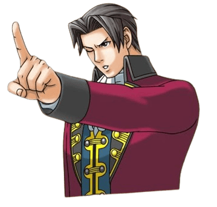
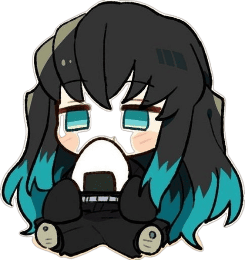
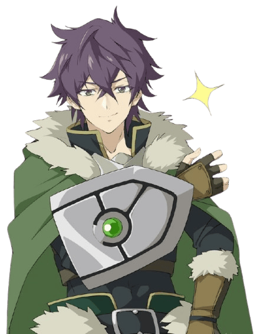

Need To Know
-

The selection of the best titles is subjective and cannot be a source of objective debate.
-

The design of website was created by hand, so don't judge too harshly.
-

All images were taken from two source: alphacoders and pinterest.
© All rights reserved.
-
Fate
One of the most expansive franchises, taking ideas from mythology, history, and philosophy and spinning them into an explosive plot about the Holy Grail War, Fate/Zero is the best place to start if you want deep drama, moral dilemmas, and directorial-level fights. Here, every character has their own ideology, goals, and no one is completely good or evil - just different paths to the goal.
-
Code Geass
It's a chess game set in the backdrop of a revolution. Code Geass is a combination of strategic action, socio-political subtext, and a charismatic protagonist, Lelouch, who, despite his harsh methods, evokes empathy. The plot is dynamic, with constant twists and turns that turn everything upside down.
-
Sword Art Online
SAO is a cult franchise that has become an icon of anime about virtual worlds. The idea of "how to survive in a game where death is real" is implemented brilliantly. The first season is a mix of adventure, romance and drama in a dynamic setting. Kirito, although criticized for "overpowering", still leads the story in an interesting way.
-
86 (Eighty-Six)
One of the most underrated dramas of recent years. It's not just about war - it's about discrimination, loss of humanity and trying to find meaning in a world that has written you off. Visually - flawless, plot - poignant and deep. The dialogues between Lena and Shin are especially impressive, gradually opening the gap between the system and the individual.
-
Frieren: Beyond Journey’s End
It's like a childhood memory or a quiet evening after a storm. There's no constant dynamics or hard action here - instead, there's a meditative journey and reflections on what remains after great achievements. Freeren is an elf who has outlived her friends and now wants to better understand what it means to "be human."
-
Attack on Titan
This anime is like a guillotine: sharp, precise, and leaves a shiver in its wake. It starts as a survival story in a world of giants, but very quickly reveals themes of power, memory, propaganda, and cycles of violence. The protagonist, Eren, is one of the most complex characters, undergoing a profound transformation.